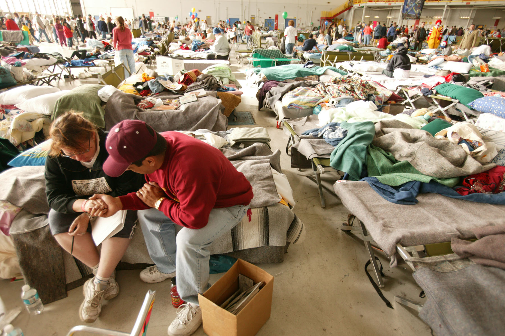
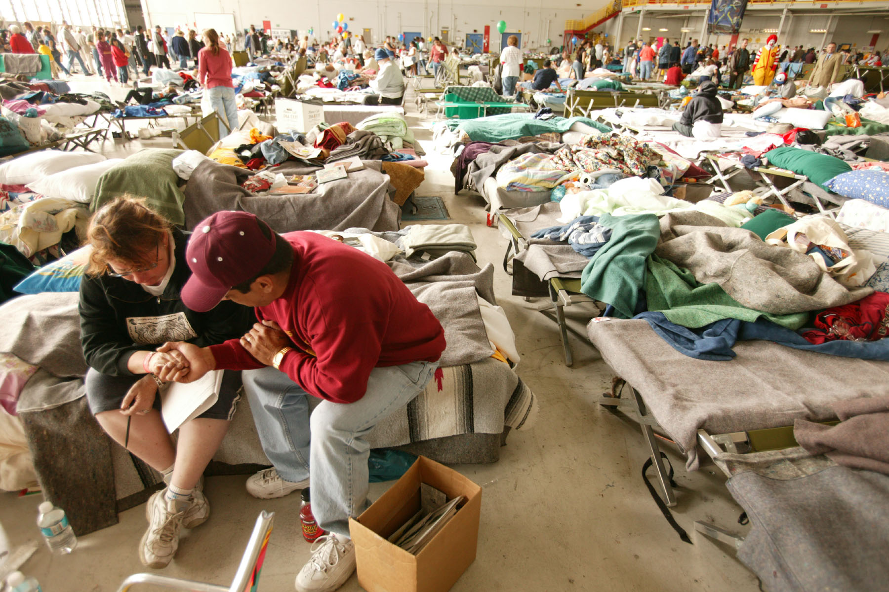

Deforestation destroys ecosystems that are vital to wildlife and humans alike. Lush green forests offer a home to some of the world’s most iconic wild animals, from the jaguar to the panda, along with countless diverse species of vegetation. But the importance of forests doesn’t stop there. Like the ocean, forests absorb excess atmospheric carbon dioxide, serving as a much-needed buffer against irreversible climate change. In short, forests help sustain life around the world—far beyond where their tree lines end. However, if humans continue to destroy forests at the current rate, forests may reach their breaking point. We cut down more than 15 billion trees each year. The United Nations Food and Agriculture Organization (FAO) estimates that humans—or, more specifically, the corporations and industries they manage—converted 420 million hectares of forested land for other uses since 1990. That’s over 1 billion acres of forest cleared to make way for strip mines, cattle grazing, and industrial sprawl. And, out of all the industries that drive global deforestation, animal agriculture is one of the biggest culprits. The meat industry routinely destroys forests to make way for cattle grazing and livestock feed. Since 1970, cattle ranching drove the vast majority of the deforestation in the Amazon. In other words, animal-centric diets are one of the main reasons we are losing our rainforests. “The biggest transformational change is needed in the way in which we produce and consume food,” warns the FAO, which calls agricultural expansion “the main driver of deforestation.”
Forests don’t just provide home to millions of wild animal and plant species—their ability to capture greenhouse gas emissions makes the earth livable for us all. When humans harm forests for short-term economic gains, we harm our species’ chances for survival in the long-term. People who live near forests suffer the most immediate impacts of deforestation. These marginalized and vulnerable communities depend on forests for their livelihoods, as forested land provides resources like fertile soil for food and clean, fresh water for drinking.
 

When humans destroy their forest habitats, animals and insects seek shelter in the populous villages surrounding forests. Animal migration into human territory leads to an unprecedented amount of contact between humans and wildlife that’s not only unnatural but dangerous. This is because animals can spread pathogens to humans. These pathogens cause illnesses known as zoonotic diseases. "Zoonotic Diseases: Disease Transmitted from Animals to Humans"). A 2021 report from the Harvard School of Public Health cautioned that, in order to prevent the spread of zoonotic disease, we must change our agricultural practices and protect our forests. Sadly, zoonotic diseases are already more prevalent in areas experiencing deforestation. Mosquitos spread malaria to humans, and mosquito populations flourish when biodiversity drops. A 2020 study found that “deforestation is associated with increased malaria prevalence, suggesting that in some cases forest conservation might belong in a portfolio of anti-malarial interventions.” A 2019 case study in Indonesian villages further solidified the connection between malaria and deforestation: researchers found that a 1% loss in forest cover increased the incidence of malaria by 10%. Malaria is not the only zoonotic disease that arises from deforestation. A 2017 study linked outbreaks of ebola in Central and West Africa to the recent loss of forests, citing “more frequent contact between infected wild animals and humans” as a probable cause. Though its origins are still unclear, scientists have hypothesized that the virus that causes COVID-19, SARS-CoV2, jumped from animals to humans. Our immune systems can’t handle these new, emerging pathogens, leading to the rampant spread of infectious disease that can grow into a global pandemic. The FAO warns that “habitat loss due to forest area change and the expansions of human populations to forest areas” increases the risk of wildlife spreading disease to humans. If we want to avoid future pandemics caused by the spread of zoonotic disease, we must protect habitats from deforestation.
provide surrounding communities with clean drinking water, food, and jobs. Indigenous peoples harvest food and medicine directly from plant species in the forest, or cultivate crops in the fertile soil. When companies cut down forests, these communities lose resources to cultivate the food they need to survive, pushing them into food insecurity. Hundreds of millions of people rely on tropical forests for food, and the highest concentrations of food insecure populations live in regions with tropical forests. Deforestation perpetuates another vicious cycle when it comes to food insecurity. Industrial agriculture companies convert forests into land for cattle grazing, palm oil, and soy production in order to feed growing populations of city-dwellers. This process destroys the biodiversity and fertility of the land, making it unsustainable for feeding populations in the long-term. As the FAO stated in a recent report, “forest degradation can be a threat to food security but also a product of efforts to obtain it—the costs of degradation need to be weighed against the value obtained.” In order to produce more food, the industrial agriculture industry is clearing forests—which, in turn, further exacerbates world hunger.
The International Union for the Conservation of Nature (IUCN) estimates that nearly 25% of the global population relies on forests for their livelihoods, including many of the world’s poorest communities. The world’s Indigenous populations suffer some of the worst impacts of forest destruction, with deforestation displacing entire Indigenous communities. In the Amazon regions of Brazil, deforestation is forcing thousands of Indigenous people off their own land. Brazilian President Jair Bolsonaro stripped protections for these communities entirely, allowing big industries to encroach even further on forested land. Bolsonaro also removed power from agencies meant to safeguard their rights, pushing Indigenous Brazilians to come together and fight the threat of deforestation on their own.

environmental impact extends far beyond the edges of the woods. When we remove forests, we lose out on the vital protection they provide against climate change, soil erosion, and natural disasters like flooding.

The roots of trees stabilize soil and keep it in place. Removing trees loosens the soil and leaves it exposed to damaging rains and wind. Removing trees on a mass scale through deforestation significantly speeds up soil erosion. Researchers examined the impacts of deforestation on loess, a soil layer of dust and silt that’s rich in minerals. They found that a combination of agriculture, cattle ranching, and demand for wood drove deforestation on the loess in northeastern Iran, increasing the loss of soil and nutrients. Developing countries pay an especially harsh price for soil erosion, especially when they lose topsoil, the nutrient-rich layer of soil that is essential for growing crops. The Island of Java in Indonesia lost 770 metric tons of topsoil per year in the late 1980s as a direct result of deforestation. Farmers in the region lost out on an estimated 1.5 million tons of rice, which had the potential to fulfill the nutritional needs of almost 15 million people. These farmers, and the local populations they work to feed, experienced firsthand how detrimental deforestation can be to human life.

Trees balance the world’s carbon dioxide (CO2) levels as the gas cycles through the atmosphere and into the oceans, soil, and other living organisms. Cutting down trees releases their stored CO2 back into the atmosphere. And, when we don’t replant the fallen trees, we lose out on their continued removal of excess carbon from the atmosphere. This leads to the excess carbon emissions that contribute to the greenhouse effect and accelerate climate change. Removing trees on a mass scale through deforestation takes away one of the most important buffers we have against climate change. If we put an end to deforestation, our annual greenhouse gas emissions would drop by 10%. This action could prove crucial in the fight against climate change, with climate scientists estimating we need to cut greenhouse gas emissions by at least 50% in the next decade to mitigate the crisis at hand. Floods

environmental impact extends far beyond the edges of the woods. When we remove forests, we lose out on the vital protection they provide against climate change, soil erosion, and natural disasters like flooding.
Trees help to control flooding. Their roots hold soil firm in heavy rains, and the trees themselves absorb some of the rainwater. Their absence can cause disastrous floods. In 2004, floods killed hundreds of people in Haiti. Reports from the aftermath of the disaster revealed that the removal of 98% of the Island nation’s forests caused the flooding—deeming the floods a “man-made ecological disaster.” On the other side of the world, deforestation for illegal harvesting also intensified floods in Kashmir, claiming the lives of 18 people in 2015. Researchers are clear that “(w)hen the trees are removed from the environment, the rainy season can have devastating effects"


Forests are home to thousands of unique flora and fauna that can’t be found in any other ecosystem. Because they house such a diverse variety of life, the destruction of forests can have a devastating impact on the earth’s biodiversity.

The earth has lost an estimated 80 million hectares of forest since 1990, as industries clear forested land for farming, grazing, mining, drilling, and urbanization. This number doesn’t just represent fallen trees—it represents the decimation of millions of animals’ habitats. In fact, habitat loss is among the greatest dangers to plant and animal species worldwide, and agriculture is “the major cause.” When animals lose their habitats, they lose the shelter they need for continued survival. Researchers have observed the decline of entire species’ populations in response to deforestation-driven habitat loss.

Rainforests are home to an estimated 50% of life on land. The FAO reports that forests offer habitat to 80% of the world’s amphibious species, 75% of bird species, and 68% of mammal species. The habitat loss associated with deforestation doesn’t kill animals directly—instead, their populations die out slowly as “their breeding rates fall and competition for food becomes even more intense.” The habitat destruction caused by deforestation drives 135 plant, animal, and insect species to extinction every day. That’s 50,000 species per year, lost forever.

Ocean acidification occurs when the ocean absorbs CO2, lowering the water’s pH level and making it more acidic. Deforestation, along with other human activities such as industrial agriculture and the burning of fossil fuels, accelerates this problem.According to the National Oceanic and Atmospheric administration, the ocean absorbs around 30% of all atmospheric CO2. As levels of atmospheric CO2 rise, so do levels in the ocean, resulting in further ocean acidification. Just like the oceans, forests act as a carbon sink, with trees absorbing and storing atmospheric carbon. Deforestation forces our oceans to take on more of the strain of excess greenhouse gases. Ocean acidification harms ocean biodiversity and ecosystems. When water becomes more acidic, it can actually dissolve the shells and skeletons of organisms like oysters, clams, sea urchins, shallow water corals, deep sea corals, and calcareous plankton. The negative effects of this reverberate through the entire ecosystem, as bigger fish rely on these calcified organisms for food. If deforestation and other human activities continue to drive ocean acidification, the chemistry of the entire ocean may be altered forever.